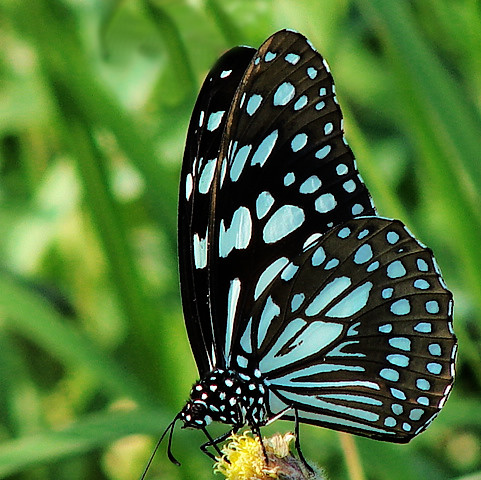

link rel="stylesheet" type="text/css" href="style.css">
BLUE TIGER
Tirumala limniacae

Common name
Blue Tiger
Diagnostic characters
Tailless. Upperside of wings black or dark brown bearing with numerous large, bluish white, semi transparent spots, blotches and streaks.
Morphological characters
Male: Upperside of wings black with bluish white semi-hyaline spots and streaks; fore wing with two streaks sometimes united in area 1b and a spot beyond, cell with a basal streak and an outwardly indented spot, a large oval spot at base of area 2, another small spot at base area 3 with a smaller discal spot beyond it, five obliquely placed subapical streaks, the three latter very slender at costa, post discal and submarginal series of irregularly arranged spots and submarginal ones being smaller;hind wing in areas 1a,1b with basal streaks, the latter with double streak in area 1b, cell having forked broad streak and its lower branch with a hook or spur like projection, at the base areas 2 and 3 slender loop, areas 4 and 5 with a broad elongate streak at their bases and a quadrate spot at base of area 6, an irregular series of postdiscal and submarginal spots, the latter being smaller. Underside having markings on wings as on upperside but with golden tinge; fore wing with apical third area olive brown and basal two-thirds dusky black; hind wing entirely olive brown and in area 1b with a pendulous light yellowish brown scent patch with a dark brown border
Female: as male, but no scent patch on underside of hind wing
Variation
Only this subspecies is found in India. The wing markings are usually bluish white and some of these may have a yellowish tinge.
Wing expanse
Male, female 90-100 mm
Habits
The butterfly has usually slow flight but it can fly more powerfully than many danaines when disturbed or migrating. It is mainly an inhabitant of hedgerows and lightly woodlands. In male, the pouches and pockets of specialized scales are stroked by the abdominal brushes to scatter scent which acts as an aphrodiasic for the females
Habitat and ecology
It is found throughout the plains and hills of India up to elvations of about 2000m in Himalaya. It is found everywhere except in desert regions and at high altitudes
Life history
The larva is yellowish white or yellowish green, with a pair of long fleshy filaments on the third segment and a short pair on the 12th segment. The full grown larva is about 37 mm in length, 7 mm in breadth and length of anterior tentacles being 9.5 mm. Its body is black-brown above and banded with blue-white but the venter is white-green. The pupa is green at first, but after a day or two numerous shiny gold dots and a raised belt of the same colour appears. It is suspended by the tail, somewhat cylinderical, constricted below the thorax. It measures about 22.5 mm in length and 10.7 mm in breadth and height at segment 7.
Food-plants
Calotropis gigantea (Ak, Akhanda), Dregea volubilis (Nak-Chhikni, Titakunga), Holorrhena antidysenterica (Khurchi), Hoya sp., Marsdeniatenacissima (Chit, jiti, Marua bel), Tylophora indica (Emetic Swallow-wort).
Distribution
India: Andaman & Nicobar Islands Assam, Orissa, Punjab, Sikkim, Uttarakhand (Kumaon), West Bengal. Elsewhere: Bangladesh, China (Hainan), Indo-China, Myanmar, Pakistan, Malaya (Perak), South China, Sri Lanka, Taiwan, Thailand, Vietnam (Tonkin)
Status
Very common